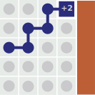
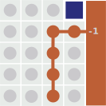
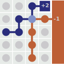
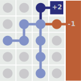

Deep Reinforcement Learning
11 - Hierarchical DRL and Policy Learning
Overview Lecture
- Recap: The Deadly Triad – causes of instability
- Hierarchical DRL
- Policy Learning
Approximation in RL – The Deadly Triad
Recap: Approximation used in RL
Goal (value-based): estimate the long-term return for a given state (or state, action pair).
\[ \begin{eqnarray*} v(s) &=& \mathbb{E}[G_t \vert S_t = s] \\ &=& \fragment{\mathbb{E} [R_{t+1} + \gamma R_{t+2} + \gamma^2 R_{t+3} + \dots \vert S_t = s] } \end{eqnarray*}\]
General Approach: Learn from experience – how to balance exploration-exploitation? This can be very unefficient and costly.
Different dimensions / decisions to consider:
- bootstrapping: Monte-Carlo \(\leftrightarrow\) Temporal Difference Learning
- on-policy \(\leftrightarrow\) off-policy
- function approximation
Recap –Classes of Function Approximation
The choice of function approximation depends on the task and yourgoals:
- Tabular: good theory but does not scale/generalise
- Linear: reasonably good theory, but requires good features
- Non-linear: less well-understood, but scales well. Flexible, and less reliant on picking good features first (e.g., by hand)
(Deep) neural nets often perform quite well, and are a popular choice.
Convergence of Prediction Algorithms
| On/Off-Policy | Algorithm | Table Lookup | Linear Approx. | Non-Linear |
|---|---|---|---|---|
| On-Policy | MC | ✔︎ | ✔︎ | ✔︎ |
| TD | ✔︎ | ✔︎ | ❌ | |
| Off-Policy | MC | ✔︎ | ✔︎ | ✔︎ |
| TD | ✔︎ | ❌ | ❌ |
1) Bootstrapping: Monte-Carlo
Monte-Carlo
Compute estimate directly from samples without bootstrapping. Averaging over many trajectories.
- requires full episodes and termination
- no bias
- but variance, quite noisy
  
\[v(S_t) \leftarrow R_{t+1} + \gamma R_{t+2} + \dots \]
1) Bootstrapping: Temporal-Difference Learning
Temporal Difference Learning
Use single-step (or \(n-\)step) reward from experience, but estimate following return from current value function
- can be applied online and in non-terminating environments
- variance is low
- but can be biased (over-estimation bias)

\[v(S_t) \leftarrow R_{t+1} + \gamma v(S_{t+1}) \]
1) Bootstrapping - Path-Perspective
Intersections between two trajectories are handled differently:
Unlike MC, TD updates merge intersections so that the return flows backwards to all preceding states.
1) Bootstrapping - Comparison Estimation of values
Monte-Carlo
Monte Carlo is averaging over real trajectories.
TD learning
TD Learning is averaging over possible paths. Nested expectations correspond to averaging across all possible paths.
Comparison
- TD learning never averages over fewer trajectories than Monte Carlo (there are never fewer simulated trajectories than real ones)
- Therefore, TD learning has the chance to average over more of the experience.
- TD learning is the better estimator (lower variance) which explains why TD tends to outperform Monte Carlo in tabular environments.
Q-Functions
Directly estimate the value of a state and an action which allows to compare different actions directly.
Q-Functions: Update – Bootstrapping
Monte-Carlo
\[q(S_t, A_t) \leftarrow R_{t+1} + \gamma R_{t+2} + \dots \]
TD Learning: SARSA
\[q(S_t, A_t) \leftarrow R_{t+1} + \gamma q(S_{t+1}, A_{t+1}) \]
Q-Learning
\[q(S_t, A_t) \leftarrow R_{t+1} + \gamma \arg\max_{a'} q(S_{t+1}, a') \]
Q-Learning: Path Perspective
Recap – 2) Off-Policy Learning
Evaluate target policy \(\pi(a|s)\) to compute \(q_\pi(s,a)\) while following behaviour policy \(b(a|s)\):
\[{S_1,A_1,R_2,\dots,S_T} ∼ b\]
Why is this important?
- Learn from observing humans or other agents
- Re-use experience generated from old policies \(\pi_1, \pi_2, \dots, \pi_{t−1}\)
- Learn about optimal policy while following exploratory policy
- Learn about multiple policies while following a single behavioral policy
2) Off-Policy Learning
Q-Learning
Off-Policy Learning
Going Off-Policy
- learn from different policy, from observation, reuse
But this can diverge. Possible Solution: Use Importance Sampling
Convergence of Prediction Algorithms
| On/Off-Policy | Algorithm | Table Lookup | Linear Approx. | Non-Linear |
|---|---|---|---|---|
| On-Policy | MC | ✔︎ | ✔︎ | ✔︎ |
| TD | ✔︎ | ✔︎ | ❌ | |
| Off-Policy | MC | ✔︎ | ✔︎ | ✔︎ |
| TD | ✔︎ | ❌ | ❌ |
TD does not follow the gradient of any objective function. This is why TD can diverge when off-policy or using non-linear function approximation.
3) Function Approximation: Dealing with Large State Spaces
Large State Space
Large/infinite state spaces are a characteristic of many interesting RL problems.
Tabular Value Functions
Tabular value functions keep value estimates for each state, and don’t generalize.
Function Approximation
E.g., Euclidean Averagers save memory and let agents generalize over states.
3) Function Approximation: Dealing with Large State Spaces
Problem in General:
- Change function from one sample \(\rightarrow\) affects whole function approximation – we are aiming for a moving target.
- As a tradeoff for generalization: We are integrating states that are assumed nearby. But this can be dangerous and depends on definition of a neighborhood.
3) Fct. Approx.: Generalization over Neighborhoods
Cliff World Approximation
Using Euclidean distance lead to smooth value function.
Adding long barrier
Averaging leads now to bad value updates across the introduced barrier.
3) Function Approximation
Euclidean averaging leads to the poor generalization in Monte Carlo and TD updates.
However, TD learning amplifies these errors dramatically whereas Monte Carlo does not – as it distributes these updates more efficiently.
Summary Deadly Triad
Three elements that can interfere with divergence: With only two present, we can avoid instability.
- Function approximation: Allows for generalization, required for realistic tasks.
- Bootstrapping: Update targets based on the existing estimates leads to more efficient learning.
- Off-Policy training: Crucial for Online Learning, meaning learning from a single stream of experience how to adapt many policies.
Countermeasures
We can’t counter all these individually, but DQN showed a way how to balance these issues (target networks for example). Other possibilities include, e.g., using \(n\)-step returns.
Deep Reinforcement Learning
Recap – Control with Value Function Approximation

Policy evaluation: Approximate policy evaluation, \(\hat{q}(·, ·, \vec{w}) ≈ q_\pi\)
Policy improvement: \(\varepsilon\)-greedy policy improvement
Recap – Action-Value Function Approximation
Approximate the action-value function \(\hat{q}(S, A, \vec{w}) \approx q_\pi(S, A)\)
Minimize mean-squared error between approximate action-value function \(\hat{q}(S,A,\vec{w})\) and true action-value function \(q_\pi(S,A)\):
\[ J(\vec{w}) = \mathbb{E}_\pi [ (q_\pi(S,A) - \hat{q}(S,A,\vec{w}))^2 ] \]
- Use stochastic gradient descent to find a local minimum \[ \begin{eqnarray*} − \frac{1}{2} \nabla_\vec{w} J(\vec{w}) = (q_\pi (S , A) − \hat{q}(S , A, \vec{w})) \nabla_\vec{w} \hat{q}(S , A, \vec{w})\\ \Delta \vec{w} = \alpha \Big( q_\pi(S, A) − \hat{q}(S, A, \vec{w})) \nabla_\vec{w} \hat{q}(S, A, \vec{w}) \end{eqnarray*} \]
Recap – DQN Architecture Overview

“we developed a novel agent, a deep Q-network (DQN), which is able to combine reinforcement learning with a class of artificial neural network known as deep neural networks.”
Recap – Overview Learning Cycle
Recap – Goal of DQN: Approximation of Q-Function
- Q-learning can be used to find an optimal action-selection policy for any given (finite) Markov decision process (MDP).
- It works by learning an action-value function that ultimately gives the expected utility of taking a given action in a given state and following the optimal policy thereafter.
- One of the strengths of Q-learning is that it is able to compare the expected utility of the available actions without requiring a model of the environment.
- Q-learning learns estimates of the optimal Q-values of an MDP, which means that behavior can be dictated by taking actions greedily with respect to the learned Q-values.
Recap – Deep Q-Networks
… improved and stabilized training of Q-learning when using a Deep Neural Network for function approximation.
Two innovative mechanisms:
- Experience Replay: use a replay buffer for storing experiences.
- Periodically Update Target network that are employed for bootstrapping.
Sampling in Experience Replay – Construction of a batch
Goal : Distribution of Examples during Training should match the Distribution of real world input:
- Small batch (one element) \(\Rightarrow\) oscillations in weight updates
- For larger batch \(\Rightarrow\) gets more stable, but for increasingly larger batches the effect gets diminished
Use Importance Sampling to compensate for biased sampling during learning the Neural Network.
Approach: Use importance sampling for constructing more meaningful batches.
Problem for non-uniform sampling: selection of particular (and using the TD error very noisy) examples \(\rightarrow\) can become unstable
In DRL: Probably the distribution in the replay memory is (even in the uniform case) not matching the one of the optimal policy and we have to live with a certain bias.
The small (more fine-tuning) weight changes proposed from already well approximated samples would get ignored.
Example: Learning in Breakout 2
Results - “Superhuman” Performance
Summary
“Our DQN method outperforms the best existing reinforcement learning methods on 43 [out of 49] of the games without incorporating any of the additional prior knowledge about Atari 2600 games used by other approaches.”
Drawbacks of DQN (and other DRL methods)
- Delayed Rewards (makes Credit Assignment even more difficult)
- Overfitting towards a specific niche and showing no generalization
- many real world scenarios are non-Markovian or non-stationary (e.g. when other agents are co-adapting)
Problematic: Markov Assumption
In many real world scenarios the Markov Property does not hold.
In ATARI games: many require information on direction of movement.
Simple Solution: add information from different time steps – as input 4 frames were used.
But difficult in non-stationary environments
- in game like scenarios, opponents can use different strategies (rock-paper-scissor),
- or other agents co-adapt and learn over time as well.
Delayed Rewards
“games demanding more temporally extended planning strategies still constitute a major challenge for all existing agents including DQN (e.g., Montezuma’s Revenge)”
- It’s difficult to explore large state spaces with sparse and delayed rewards.
- An Objective Function might not provide good guidance where to continue exploration.
Difficult Problems for DRL
Large state spaces are difficult to explore, in particular, sparse and delayed Rewards.
The Objective Function doesn’t provide good guidance where to continue exploration.
Evolutionary Robotics Perspective
Objective functions often suffer from the pathology of local optima, that is, dead ends in the search space with respect to increasing the value of the objective function. In this way, landscapes induced by objective (e.g., fitness) functions are often deceptive.
the more ambitious the goal, the more difficult it may be to articulate an appropriate objective function and the more likely it is that search can be deceived by local optima (Ficici and Pollack, 1998; Zaera et al., 1996). The problem is that the objective function does not necessarily reward the stepping stones in the search space that ultimately lead to the objective.
Deceptive Objectives
Landscapes induced by objective functions are often deceptive – the objective function is misleading.
Often, stepping stones are required — initially, objective might get worse.
Search for Stepping Stones as a Search for novelty
Try to cover all possible behaviors:
- use novelty as a proxy for finding stepping stones;
- in-stead of searching for a final objective, the learning method is rewarded for finding any instance whose functionality is significantly different from what has been discovered before.
Assumption: Behavioral space is not unbound, but reasonably structured.
Novelty search is not like exhaustive search, but assumes that the number of novel behaviors is reasonable and limited in many practical domains.
Exploit sparseness of space of behaviors to decide novelty = requires a form of memory.
Example: Solve Deceptive Maze
- Conflations of behavior are indicated in gray for reducing the amount of information in the behavioral characterization … only geographically similar behaviors are conflated by a rectangle that is a part of a regular grid,
- characterizing behavior by fitness … behaviors that end in very different locations are conflated by the circle centered on the goal with radius equal to a particular fitness
Use Hierarchical DRL to Explore Behavioral Space
Find stepping stones to construct overall behavior as chain:
- divide overall problem into subgoals and learn those individually
When the environment provides delayed rewards, we adopt a strategy
- to first learn ways to achieve intrinsically generated goals, and
- subsequently learn an optimal policy to chain them together.
Use intrinsic motivation to explore large parts of behavioral space
Intrinsically motivated agents can explore new behavior for its own sake rather than to directly solve problems. Such intrinsic behaviors could eventually help the agent solve tasks posed by the environment.
Intrinsic Motivation
“Intrinsic motivation is defined as the doing of an activity for its inherent satisfaction rather than for some separable consequence. When intrinsically motivated, a person is moved to act for the fun or challenge entailed rather than because of external products, pressures, or rewards.”
Example: Discrete MDP with delayed rewards

States: 6 possible states and the agent always starts at \(s_2\).
Action
- The agent moves left deterministically when it chooses left action;
- but the action right only succeeds 50% of the time, resulting in a left move otherwise.
Reward: The terminal state is \(s_1\) and the agent receives
- the reward of \(1\) when it first visits \(s_6\) and then \(s_1\).
- The reward for going to \(s_1\) without visiting \(s_6\) is \(0.01\).
Example: Discrete MDP with delayed rewards
Q-Learning: unable to find optimal policy, directly going to \(S_1\) to obtain a reward of \(0.01\).
Hierarchical Q Learning:
- learns to choose goals \(s_4, s_5 or s_6\),
- This leads the agent to visit \(s_6\) before going back to \(s_1\).
Therefore, the agent obtains a significantly higher average reward of around 0.13.
Dealing with Delayed Rewards
“When the environment provides delayed rewards, we adopt a strategy to first learn ways to achieve intrinsically generated goals, and subsequently learn an optimal policy to chain them together.”
Approach
- Use a hierarchical representation.
- Exploration: Driven by a search for novelty (Intrinsic Motivation). This tries to cover all possible behaviors during exploration, find stepping stones.
Hierarchical Approach: Works on different timescales
- the top level module (meta-controller) takes in the state and picks a new goal,
- the lower-level module (controller) uses both the state and the chosen goal to select actions either until the goal is reached or the episode is terminated.
“The meta-controller then chooses another goal and steps (a-b) repeat. We train our model using stochastic gradient descent at different temporal scales.”
Temporal Abstraction in hDRL
Temporal Abstraction
The process of breaking down a complex task into a sequence of simpler sub-tasks, or “options”. Each option is a self-contained policy that can be executed for a certain period of time before returning control to the overarching learning agent.
Hierarchical DRL Algorithm
the agent uses a two-stage hierarchy consisting of a controller and a meta-controller.
- The meta-controller receives \(s_t\) and chooses a goal \(g_t\).
- The controller then selects an action \(a_t\) using \(s_t\) and \(g_t\). The goal \(g_t\) remains in place for the next few time steps either until it is achieved or a terminal state is reached.
The internal critic is responsible for evaluating whether a goal has been reached and providing a reward \(r_t(g)\)
The objective function for the controller is to maximize cumulative intrinsic reward.
Intrinsic Motivation - Constructing a Representation
Early Learning Phase
Select key as (sub)goal – but fails.
Intermediate Phase
Select ladder successful as goal.
Intrinsic Motivation - Constructing an Abstraction
Intermediate Phase
Select ladder successful as goal.
Intermediate Phase
Select key successful as goal.
Learning with Intrinsic Motivation
Policy Learning
Overview RL Methods
Model-based RL
- ‘Easy’ to learn a model (supervised learning)
- Learns ‘all there is to know’ from data
- Uses compute & capacity on irrelevant details
- Computing policy (=planning) is non-trivial and expensive (in compute)
Value-based RL
- Easy to generate policy (e.g., \(\pi(a|s) = \mathbb{1}(a = \arg\max_a q(s, a))\))
- Close to true objective
- Fairly well-understood, good algorithms exist
-
Still not the true objective:
- May focus capacity on irrelevant details
- Small value error can lead to larger policy error
Policy Gradient
Don’t approximate a value-based function.
Goal: Instead, directly learn the policy with a parametrized function \(\pi(a \vert s; \theta)\).

Overview RL Methods 2
Value-based RL
- Easy to generate policy
- Close to true objective
- Fairly well-understood, good algorithms exist
-
Still not the true objective:
- May focus capacity on irrelevant details
- Small value error can lead to larger policy error
Policy-based RL
- Right objective!
- More pros and cons on later slide
Policy-Based Reinforcement Learning
We already approximated the value or action-value function using parameters \(\theta\):
\[ V_\theta(s) ≈ V_\pi(s), Q_\theta(s, a) ≈ Q_\pi(s, a) \]
A policy was generated directly from the value function, e.g., using \(\varepsilon\)-greedy.
But we can also directly parametrise the policy \(\pi_\theta(s,a) = P(a | s,\theta)\)
We will focus again on model-free reinforcement learning.
Recap – Policy Learning in Multi-Armed Bandits
Consider action selection as a probability distribution:
- For each action: Consider an (estimated) preference \(H_t(a)\) of that action which
- can be directly used to express a probability for selecting that action (as a soft-max distribution)
\[p(A_t = a) = \frac{e^{H_t(a)}}{\sum_{b=1}^k e^{H_t(b)}} = \pi_t(a)\]
Gradient Bandit Algorithm
Learn / adapt the action preference function directly using stochastic gradient ascent:
\[\begin{eqnarray*} H_{t+1}(A_t) &=& H_{t}(A_t) + \alpha (R_t - \bar{R}_t) (1-\pi_t(A_t)), &\text{ and} \\ H_{t+1}(a) &=& H_{t}(a) - \alpha (R_t - \bar{R}_t) \pi_t(a) & \text{ for all }a \neq A_t \end{eqnarray*} \]
Following (Sutton und Barto 2018).
Value-Based and Policy-Based RL
Value Based
- Learnt Value Function
- Implicit policy (e.g. \(\varepsilon\)-greedy)
Policy Based
- No Value Function
- Learnt Policy
Actor-Critic
- Learnt Value Function
- Learnt Policy
Overview Approaches

Advantages of Policy-Based RL
Advantages:
- Better convergence properties
- Effective in high-dimensional or continuous action spaces
- Can learn stochastic policies
Disadvantages:
- Typically converge to a local rather than global optimum
- Evaluating a policy is typically inefficient and high variance
Stochastic policies
Why could we need stochastic policies?
- In MDPs, there is always an optimal deterministic policy
- But, most problems are not fully observable:
- This is the common case, especially with function approximation.
- The optimal policy may then be stochastic.
- Search space is smoother for stochastic policies \(\Rightarrow\) we can use gradients
- Provides some ‘exploration’ during learning
Example: Aliased Gridworld
- The agent cannot differentiate the two white states.
- Consider features of the following form (for all N, E, S, W): \[\phi(s) = \overbrace{(\underbrace{1}_{up} \underbrace{0}_{right} \underbrace{1}_{down} \underbrace{0}_{left})}^{\text{walls=state}}\]

Compare a deterministic and stochastic policy.
Example: Aliased Gridworld 2
- Under aliasing, an optimal deterministic policy will either
- move East in both white states (shown by red arrows)
- or move West in both white states (gray arrows).

Either way, it can get stuck and never reach the money.
Value-based RL learns a near-deterministic policy, e.g., greedy or \(\varepsilon\)-greedy. So it will traverse the corridor for a long time.
Example: Aliased Gridworld 3
An optimal stochastic policy will randomly move E or W in white states:
\[ \begin{eqnarray*} \pi_\theta(\text{wall to N and S, move E}) &=& 0.5 \\ \pi_\theta(\text{wall to N and S, move W}) &=& 0.5 \end{eqnarray*} \]

It will reach the goal state in a few steps with high probability.
Policy-based RL can learn the optimal stochastic policy. Even, when optimal policy does not give equal probability (which differs from random tie-breaking with values).
Policy Learning Objective
Policy Objective Functions
Goal: given policy \(\pi_\theta(s, a)\), find best parameters \(\theta\)
How do we measure the quality of a policy \(\pi_\theta\)?
- In episodic environments: We can use the average total return per episode
- In continuing environments: We can use the average reward per step.
Policy Objective Functions: Episodic Environments
Episodic-return objective:
\[ \begin{eqnarray*} J_G(\theta) &=& \mathbb{E}_{S_0 \sim d_0, \pi_0 } \Big( \sum_{t=0}^{\infty} \gamma^t R_{t+1}\Big)\\ &=& \mathbb{E}_{S_0 \sim d_0, \pi_0 } \Big(G_0\Big)\\ &=& \mathbb{E}_{S_0 \sim d_0 } \Big( \mathbb{E}_{\pi_0 } (G_t | S_t = S_0) \Big)\\ &=& \mathbb{E}_{S_0 \sim d_0 } \Big( v_{\pi_0} (G_t | S_t = S_0) \Big) \end{eqnarray*} \]
where \(d_0\) is the start-state distribution. This objective equals the expected value of the start state.
Policy Objective Functions: Average Reward Objective
\[ \begin{eqnarray*} J_R(\theta) &=& \mathbb{E}_{\pi_\theta } \Big( R_{t+1}\Big)\\ &=& \mathbb{E}_{S_t \sim d_{\pi_\theta} } \Big( \mathbb{E}_{A_t \sim \pi_{\theta}(S_t) } (R_{t+1} | S_t) \Big)\\ &=& \sum_s d_{\pi_\theta} (s) \sum_a \pi_\theta(s,a) \sum_r p(r |s,a)r \end{eqnarray*} \]
where \(d_\pi(s) = p(S_t = s | \pi)\) is the probability of being in state \(s\) in the long run (Think of it as the ratio of time spent in \(s\) under policy \(\pi\)).
Policy Gradients
Policy Optimisation
Policy based reinforcement learning is an optimization problem.
- Find \(\theta\) that maximises \(J(\theta)\)
- We will focus on stochastic gradient ascent, which is often quite efficient (and easy to use with deep nets).
- Different approaches that do not use gradient
- Hill climbing / simulated annealing
- Genetic algorithms / evolutionary strategies
Policy Gradient
Approach: Ascent the gradient of the objective \(J(\theta)\)
\[ \Delta \theta = \alpha \nabla_\theta J(\theta) \]
- Policy Gradient \[\nabla_\theta J(\theta) = \begin{pmatrix} \frac{\partial J(\theta)}{\partial \theta_1}\\ \vdots \\ \frac{\partial J(\theta)}{\partial \theta_n} \end{pmatrix}\]
- \(\alpha\) is a step-size parameter
Stochastic policies help ensure that \(J(\theta)\) is (mostly) smooth.
Gradient Ascent
Computing Gradients by Finite Differences
To evaluate policy gradient of \(\pi_\theta (s, a)\)
- For each dimension \(k \in\) [1, n]$
- Estimate \(k-\)th partial derivative of objective function w.r.t. \(\theta\)
- By perturbing \(\theta\) by small amount \(\varepsilon\) in \(k-\)th dimension \[\frac{\partial J(\theta)}{\partial \theta_k} ≈ \frac{J(\theta + \varepsilon u_k) - J(\theta)}{\varepsilon}\] where \(u_k\) is unit vector with \(1\) in \(k-\)th component, \(0\) elsewhere
- Uses \(n\) evaluations to compute policy gradient in \(n\) dimensions
Characteristics:
- Simple, noisy, inefficient - but sometimes effective
- Works for arbitrary policies, even if policy is not differentiable
Example: Learning to Walk on AIBO
Goal: learn a fast walk on AIBO robot that can be applied in RoboCup
Parametrize AIBO walking policy and learn directly these parameters through reinforcement learning
AIBO Parameters of gait for Stepping
Each leg is performing a half-elliptical locus. Each pair of diagonally opposite legs in phase with each other and perfectly out of phase with the other two.
Four parameters define this elliptical locus:
- length of the ellipse;
- height of the ellipse;
- position of the ellipse on x axis;
- position of the ellipse on y axis.
Overall: 12 parameters (for front, rear, plus height, timing).
Example: Policy Gradient Approach
Goal: optimize forward speed as the sole objective function.
Approach: Policy gradient reinforcement learning – consider possible sets of parameter assignments that define a policy which is then executed on the robot.
Gradient is estimated in parameter space, and then moved towards an optimum.
Example: Policy Gradient Approach
- Start with \(t\) random policies \({R_1, \dots, R_t}\) near initial policiy \(\pi\): \(R_i = {\theta_1 + \Delta_1, \dots, \theta_N + \Delta_N}\) with \(\Delta_j\) chosen randomly from \(+\epsilon_j, 0, −\epsilon_j\) (\(\epsilon_j\) is a fixed value that is small relative to \(\theta_j\))
- Evaluate all policies on actual robot.
- Estimate the gradient in each parameter dimension through averaging over the score variations wrt. variation in that parameter.
Example: Results – Learning of Gaits
Use \(t = 15\) policies per iteration.
As there was significant noise in each evaluation, each set of parameters was evaluated three times.
Training was stopped after reaching a peak policy at 23 iterations, which amounted to just over 1000 field traversals in about 3 hours.
Example: Results Comparison
Aibo Performance
Velocity (given in \(mm/s\)) from different teams as of 2004.
| Team | Hand-Tuned Gaits | Learned Gaits |
|---|---|---|
| CMU (2002) | 200 | |
| German Team | 230 | |
| UT Austin Villa | 245 | 291 |
| UNSW | 254 | |
| Hornby (1999) | 170 | |
| UNSW | 270 |
Results – AIBO Parameters for Stepping
Found Parameters
| Parameter | Initial V. | \(\epsilon\) | Best V. |
|---|---|---|---|
| Front locus: | |||
| (height) | 4.2 | 0.35 | 4.081 |
| (x offset) | 2.8 | 0.35 | 0.574 |
| (y offset) | 4.9 | 0.35 | 5.152 |
| Rear locus: | |||
| (height) | 5.6 | 0.35 | 6.02 |
| (x offset) | 0.0 | 0.35 | 0.217 |
| (y offset) | -2.8 | 0.35 | -2.982 |
| Locus length | 4.893 | 0.35 | 5.285 |
| Locus skew mult. | 0.035 | 0.175 | 0.049 |
| Front height | 7.7 | 0.35 | 7.483 |
| Rear height | 11.2 | 0.35 | 10.843 |
| Cycle time | 0.704 | 0.016 | 0.679 |
| Time on ground | 0.5 | 0.05 | 0.430 |
Example: Learned AIBO Gaits
Gradients on parameterized policies
How to compute this gradient \(\nabla_\theta J(\theta)\)?
- Approximate stochastically.
- Assume policy \(\pi_\theta\) is differentiable almost everywhere (e.g., neural net).
Reward
For average reward \(\nabla_\theta J(\theta) = \nabla \theta \mathbb{E}_{\pi_\theta} (R)\)
How does \(\mathbb{E}(R)\) depend on \(\theta\)?
Policy Gradient Theorem
Policy Gradient Theorem
Problem: we want to estimate a (reward) function \(f\) and optimize over this using gradient ascent. How can we estimate the gradient?
\[\begin{align*} \nabla_{\theta} E_x[f(x)] &= \nabla_{\theta} \sum_x p(x) f(x) & \text{definition of expectation} \\ & = \sum_x \nabla_{\theta} p(x) f(x) & \text{swap sum and gradient} \\ & = \sum_x p(x) \frac{\nabla_{\theta} p(x)}{p(x)} f(x) & \text{both multiply and divide by } p(x) \\ & = \sum_x p(x) \nabla_{\theta} \log p(x) f(x) & \text{use the fact that } \nabla_{\theta} \log(z) = \frac{1}{z} \nabla_{\theta} z \\ & = E_x[f(x) \nabla_{\theta} \log p(x) ] & \text{definition of expectation} \end{align*}\]
\(p(x) = p(a \mid \text{Image})\) will be our policy - note: gradient comes from policy.
(Karpathy 2016), for more information and overview of PG algorithms see (Weng 2018b).
Backpropagation of Gradient Information
Problem: stochastic sampling (select an action) is non-differentiable
Solution for ‘red’ parameters: update independently using policy gradients
= encouraging samples that led to low loss.
Recap - Attention Mechanisms in NN
A goal is to learn this as well: Attend to which part of the context?
For example, a RNN can attend over the output of another RNN. At every time step, it focuses on different positions in the other RNN.
In order to learn to attend, attention has to be differentiable.

Policy Gradient Training
For comparison: Training of a NN using supervised learning:

Training a policy network in reinforcement learning:

(Karpathy 2016), for more information and overview of PG algorithms see (Weng 2018b).
Comparison: Advantages of Methods
Value-based Methods
- Simple – can be realized as tables, still convergence guarantees.
- Efficiency and Speed – bootstraping speeds up learning
Policy Gradient Methods
- Applicable in large and continuous action spaces
- Employ stochastic policies
Further considerations:
- Do you want to access directly a value, e.g. for other methods?
- The state representation of the problem might lends itself more easily to either a value function or a policy function.
Actor-Critic Method
Combination of both methods is widely used in Actor-Critic approaches – learning both:
- an actor policy allowing to use Policy Gradients and
- a value-based function that allows to do the updates during each timestep using bootstrapping.
References